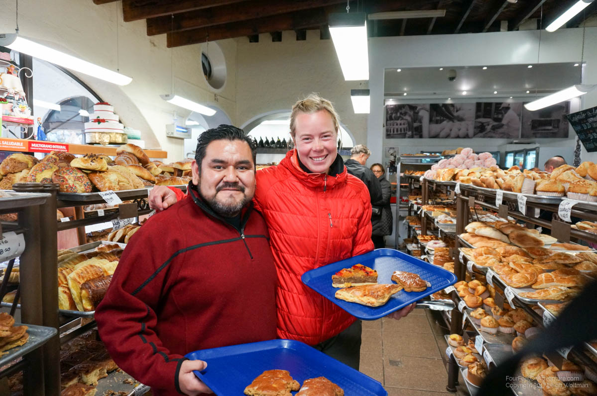
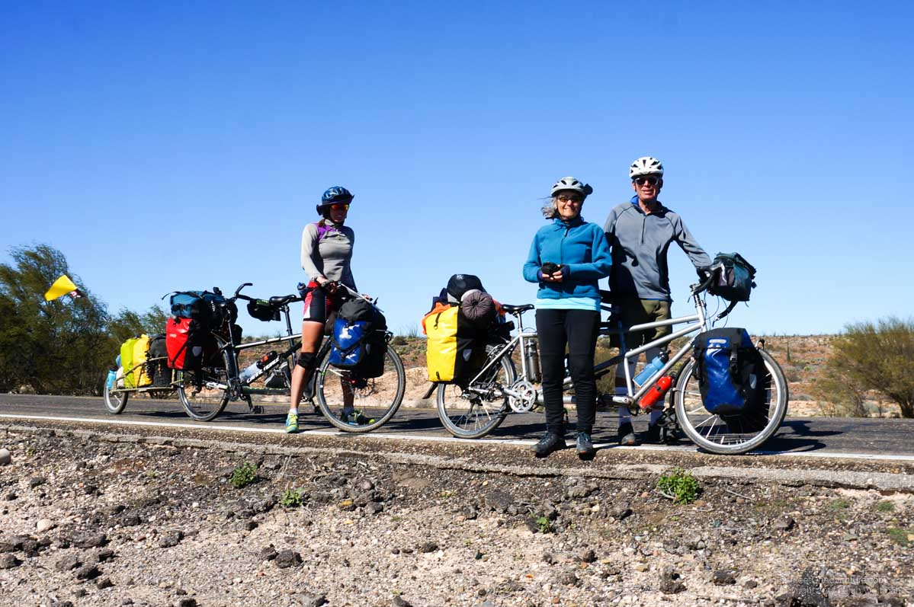
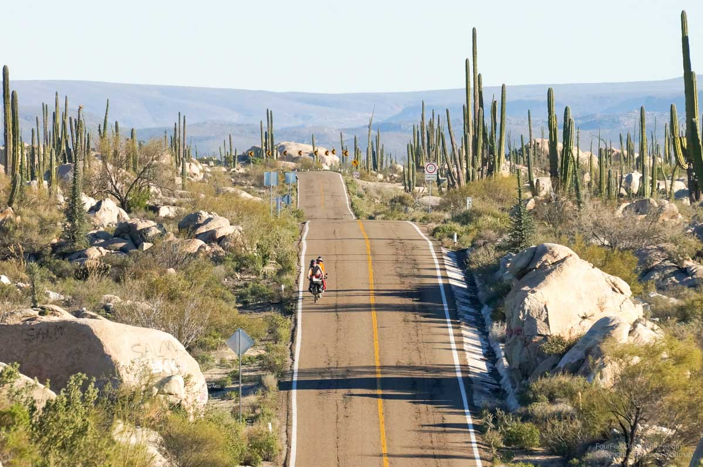
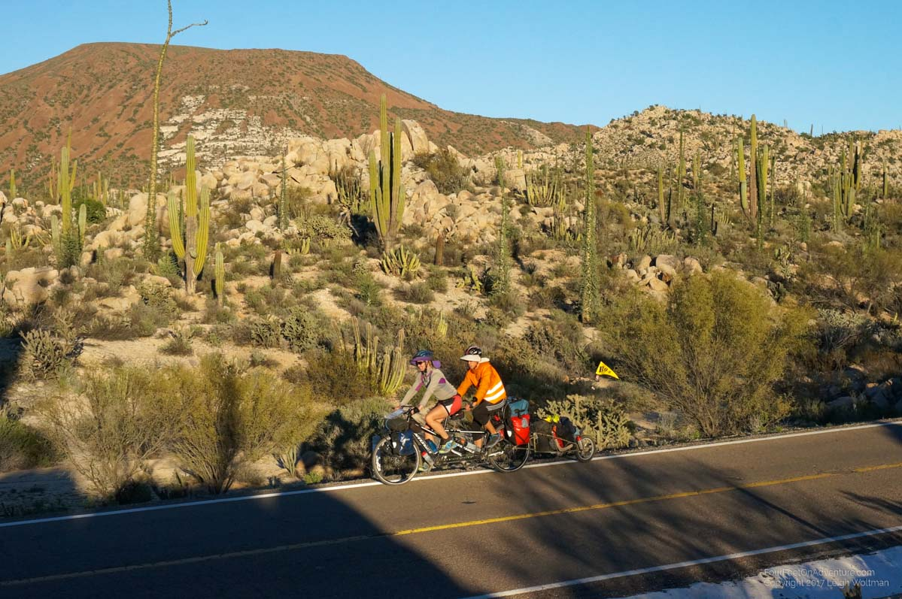
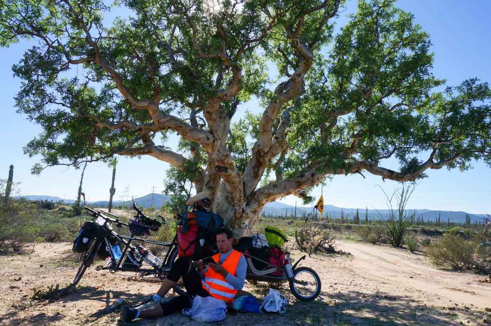
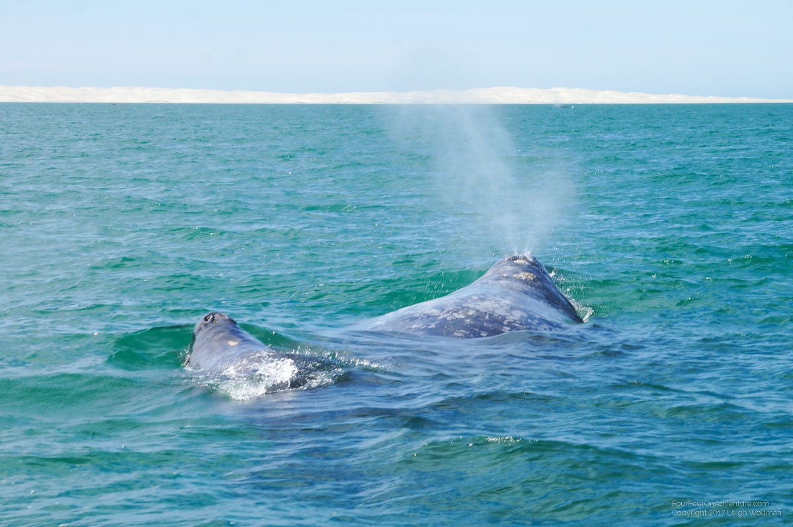

Finally time to cross the border! It was dry-ish, so we biked the 10 km to the border easily. You wouldn’t believe how hard it was to get a visa for Mexico. Not because the border agent was difficult, but because we couldn’t find him. We got through a gate, followed some pedestrians, there was an x-ray machine, but the guy waved us passed, and we were in Mexico. The whole process took about 2 minutes. But Leigh realized that we needed a visa. After some asking around, we found out we passed the immigration office somewhere on our way through. So one by one, one person staying with the bike, we looped back. It seemed that you could walk back into the US, but there must have been guards somewhere preventing that. The official crossing into the US was a block next to us, both are one way. And also here, in Tecate, just like in Tijuana, is a fence that marks the border. Leigh let me be illegal for a while longer and went first. When it was my turn, I found a little sign saying “foreigners this way” and following the arrows. At the end was a guy in an office that let me fill in some papers and asked for some money, and gave me a 6 month visa in return. Easy peasy and it took 5 minutes.
This border is quite the cultural shock and compared to the US it is immediately like stepping into a different way of life. To avoid a feeling of cultural paralysis we quickly found the nearest Subway and ordered a sandwich, only upon leaving did I notice the special of the month in Mexico is Canadian bacon, haha! We also picked up a phone card, though our skills for negotiating cellular terms in Spanish is somewhat suboptimal.
From the downtown we made our way to a Warmshowers host we had been communicating with since San Diego. Raul made us super welcome and helped us understand some questions we had. He then took us on a tour in his car of the road out of town and then to a recommended taco restaurant for dinner. Oh, and before that we stopped at a bakery. It was delightfully full of pastry options. This all made us feel more comfortable and we much appreciated the night on his spare bedroom floor.

The forecast had an opening in the rain that might given us an opportunity to get further south so we left early the next morning. Cycling roughly south we were definitely in Mexico, the exhaust from unregulated cars is immediately noticeable, the streets are more narrow and poorly signed, and of course, run down buildings are everywhere. The highway surprised us and had a paved shoulder for most of the day. It appears that they are repaving the entire Baja and this was the first section of modernization. We continued to climb into Mexican mountains with rain clouds threatening to the north. The rain already fallen has made good work and as we passed landslides being cleared off the road we realize that the road may have been impassible until just then.
We made our intended destination after a good day and found a somewhat abandoned campground. It is part of a school for the deaf run by missionaries who came asking for a donation in exchange for camping later in the day. Fortunately there was a large picnic shelter and we put the tent up underneath to avoid getting soaked by the rain which started falling in the evening. Some Americans were camping there too in an RV so that made our first night of Mexican camping feel a little safer. The Baja here around Guadeloupe is a big vineyard area, so lots of grapes on the sides of the roads. We learned that its fashion among rich Mexicans to have their own winery in the Baja as hobby.
The next morning, there was a break in the clouds and we decided to use it to try and get to the first big town, Ensenada. We made it, settled on a hotel that is cheap and nice by American standards but probably way too expensive by Mexican standards, and just as we get inside the rain starts pouring down. Very nice to be inside. Our attempt to get food and laundry done is slightly stymied by flooded streets which we can't walk through without getting soaked feet.
We stock up with groceries and head off down the highway. Roads until now were surprisingly good. All newly build, no potholes, and broad shoulders. We are now on Highway 1 and if we had taken the route through Tijuana it would have connected up here. We start to loose our shoulder but to our surprise Mexican traffic is seemingly better than American traffic. Cars either give you an extra wide berth (there's always the occasional one who goes by close), or if there is opposing traffic on the two lane highway, they slow to your speed and wait until it is clear to pass. We've seen a couple of signs that are a public service campaign that asks motorists to give cyclists 1.5 metres in passing. Wow, never thought Mexico would have better cycling laws than Canada which is 1 metre in only some jurisdictions. Often, as people pass, they honk and wave which gives us a good feeling. Traffic volumes on the highway are fairly light, and with the rear view mirrors we communicate lots about pending traffic.
We make our way to campground described by our guidebook. It turns out to be fairly deserted. During the warm summer, it is a campground centred around a couple swimming pools and has a small zoo (peacock, monkey, chicken, etc). Since the place is empty is seems a little creepy to be camping here, but eventually some British Columbians heading north in a truck camper pull in. It is nice to have company again while camping and they give us some tips about Mexico.
The next day is again sunny, we seem to have left the rain behind for dry skies and only somewhat cool temperatures, mid-teens for highs. We aim to get going but we find we have another flat tire. This time, a small piece of metal has punctured through. We pass through our first military checkpoint. These are a little alarming but we were informed of them based upon our research. The government seems to deploy the military at checkpoints along the highway to do what, we aren't sure, but when you round the corner, you see traffic cones dividing the lanes and usually humvees and several troops in fatigues carrying automatic weapons. We've gone through three or four now and they generally have a warning sign so we can slip the bear spray into our bags. We aren't sure it is legal in Mexico but likely to have it for dogs, or well, I guess bears! :)
After passing several towns, we eventually arrive in another one where we believe there is a hotel. It is getting late so we are slightly nervous when the town doesn't appear to have a hotel, but some locals hand waive out some directions for us where we find a hotel that must only be a couple years old if not brand new. Hotels here are generally 'motels' but we don't argue. For about $20 Canadian a night, it is nice to be inside and we can then get on the road quicker in the morning. After all this, we cannot be described as fast for packing up the tent and sleeping bags and getting them on the bike no matter how much we have practiced.
Our next day of biking takes us further towards San Quintin. We hear there will be a hotel there. Since leaving Ensenada we have been slightly nervous about our supply of pesos. With US biking we could use the credit card everywhere and we didn't have to give a care about cash. Therefore, we forgot to fill up on cash in the big town and we were running a little low. We have some reserve US dollars stored inside the handlebar stem on the bike but would rather not use it right away! We fill up for gas along the way, our $35 cents of gas has turned to 7 pesos, and the Mexican's are not worried about any transport safety regulations our little gas container may be violating. Finally, we pass our first town with an HSBC bank. We know this brand works with our cards after having trouble initially with the more local bank, Bannamex. Flush with cash, we set off again. The highway is getting busier and busier and San Quintin ends up being all town. We eventually leave the highway to cycle the dirt farmers path in the ditch beside the highway. It is muddy and slower but with cars passing one after another it was getting a little tense. We take the first hotel we find.
In the morning we cycle on, this part is fairly flat and while biking through the city, a man who is definitely an adult approached us on a BMX style bike. He first glides past, mumbling something in Spanish and then turns off the pavement and does a loop through a side road and rejoins the pavement behind us. This time, I see in the mirror he is trying to grab onto the flag flying from our trailer. I signal off the road and ask Annette to just pull off out of traffic. In doing so, there is a brush of tires and our instigator who is likely biking with one hand, crashes into the dirt shoulder behind us. I check the trailer, no damage done, but this guy gives us a creepy feeling. He gets up and first checks his bike and then sits back down again. We decide to move on, we can't communicate anyway. The whole area is agriculture fields and greenhouses. Eventually we find ourselves on a long section along a long beach. This is the closest we have been to the ocean in a while and the Pacific swell is large and crashing in. We decide to stop for a break, and while slowing we realize dogs are running out of the isolated shack that might be the only one on this section. It is a whole pack of 4 or 5 dogs and they take to the highway bearing teeth. Pedal! We pedal as fast as we can, and I spray my water bottle at them. This helps a lot and fortunately they give up chase. My heart was beating way too fast to properly think about getting the bear spray out. We will have to be a little bit more on the lookout for dogs and I practice my one-handed arming of the bear spray canister a couple times over lunch.
A little turn inland and we are confronted with a large hill which once summited gives us our evening town of El Rosario. We stop at the first hotel, and a couple immediately walks out proclaiming their joy to see us. We learn that Gary and Betty are also cyclists and amazingly also riding a tandem! They are a retired couple from Washington state and they are biking the Baja in the same direction as us. We swap stories for a couple minutes before deciding to try and camp with them in the morning. We decide to look for a slightly cheaper hotel option and learn that they try to leave at 8AM in the morning. That is a good two hours earlier than us but we will try. That evening we have some good food at two restaurants after it is determined we need two dinners to satisfy the biking legs.

The next morning we try and achieve 8AM but are a little behind as we see them bike by. The whole day is a climb and while occasionally we think we see them in the distance, they are faster than we are. They are packing light since they are only in this one climate and have everything on their bike without the need for a trailer. As we approach noon, the climbing reveals a strong wind blowing at higher elevations. It is generally a cross wind but sometimes a headwind on the winding road. Eventually we catch Gary and Betty at an isolated roadside restaurant (there appears to be one every 50 or so kilometers). They are tired by the wind (phew, it wasn't just us) and have arranged to camp beside the restaurant. We decide to join. We have some food with them and shelter in the restaurant out of the wind. The restaurant is run by a couple and their 4 children. When we go to pay our bill, they double charge us for a drink even though I already paid their daughter. We are a little incensed that they won't believe us but no one seems to understand each other so we pay for an extra drink.

The wind continued to blow for the first half of the night including one epic gust which woke me and almost flattened the tent. It knocked over Gary and Betty's bike. Of course, Annette didn't hear it, I only wish I could sleep like that!
The next morning Gary and Betty are away early to avoid the wind, we try but pack up a little later. However, the wind starts early today, we are still climbing and the wind is intense. We are in fairly deserted desert. At the first cafe we sight we stop for a drink and notice their bike tracks took the same stop. Finally, after lunch, we catch them at the next restaurant where they suggest we get some scrambled eggs. We both decide we are going to try and push for the next down. They leave as we are getting our food. The wind is intensifying and it is mainly a crosswind probably gusting up to 50 or 60 km/h. After a couple kilometers we pass them and they are walking their bike. They have gotten spooked by the wind and will walk to the next restaurant (a kilometer this time) and try and camp. Probably feeling a little frustrated internally that they were always ahead, we decide to push on. The wind is so strong we have to stop and get off the highway when a semi-truck passes, the wind from the truck combined with the stopping and starting of the incredible cross wind is just too dangerous.
We continue until buoyed by some optimism from reaching the daily summit we realize we are going to have a mainly downhill run into the town we are hoping to get to. The gradient is hardly noticeable with the wind but it helps. We slowly turn into a section of incredible cactus. The whole area is a cactus garden with giant and small cactus along with a tree that grows only here. It is a woody tree that looks like a tree without branches. The only leaves it has are almost like an ivy covering over its woody stalk. It reaches up to 20 metres tall so it quite unique. The sun is setting as we roll into town, exhausted but happy with our cactus reward at the end of an impossibly windy day. We debate about hotels, there's a fancy hotel here and a dump. We go for the dump, and regret not taking the fancy one. It would have been nice to have a good shower. This was a long day, we accomplished 80 kilometers, our new daily distance record, even with the wind.
The shower plumbing in Mexico is quite interesting. We have found classic reversed hot and cold knobs, a single knob system with reversed pipes, hot water that got cold if you opened the valve more, and hot water that worked in the shower if you turned on the sink which only ever ran cold. Sometimes it is nice to get a good hotel and have a great shower!
The next morning we are just finishing a final stop to buy some chocolate bars when Garry and Betty arrive. They woke up super early to beat the wind which was apparently still blowing on the top of the plateau. For now the wind is calm for us so we give them a hotel recommendation and we set off. The day involves a heavy climb to an alpine dry lake bed, before we start a long generally downhill section. The next 100 km should have on average a downhill gradient. This will help a lot!

The highways in Mexico have been good to us so far, as I mentioned drivers give us a fair amount of space and traffic volumes have been pretty light. However, it is a little sobering to be reminded of road fatalities. As Catholic tradition whenever someone dies they build a little memorial at the site of death, so we pass many of these along the road. Of course, they are often elaborately constructed and some dates are from decades back. However, there certainly are a lot during the winding mountain highway. We've also noticed that the desert is very littered with trash, most of this is garbage chucked out a car window but we've also noticed that when a truck or car crash occurs they seem to tow away the wreckage but only the biggest pieces. Often cargo or broken bits of vehicle remain. It is certainly sobering to see a catholic memorial with a white cross while bits of fiberglass from the actual freightliner still litter the ground around.
We eventually find a restaurant at a highway junction and ask if we can camp in the back pasture. They offer which we accept. Along the way, we are passed by another cyclist. He is from San Francisco and is biking to central Mexico for the winter as he works one of those pedal-cab-bikes on the waterfront during the summer. He looks to be in good shape and apparently did over 160 km on the day that was super windy and uphill. Yikes!

The next morning we get going a little late, but enter very flat desert with that slight downhill gradient. We are doing okay, but my stomach isn't feeling that good. We have to make frequent stops, but we trod along. In the late afternoon we are left with a decision, ask to camp at a small town or push to the next. We decide to push, but it is starting to get dusk as we are frantically cranking out the last kilometers. We saw one steep hill in front of us, just one switchback up I promised. We started up and we heard a sickening popping sound, our main drive chain broke a link! It was in the 'quick link' which we have a spare so after fighting with it for a while the chain was in one piece and we rolled on. We make it to town just as it is getting dark and are surprised to find an alright motel for a good price. We accept having put in our longest day again, this time just over 100 km.
And finally yesterday, our desert flattens out as it runs beside the ocean. Half of the segment, around 40 km was in a perfect straight line and the ground only undulated like the Canadian prairies. For almost 15 km we could see the huge Mexican flag that marks the end of the northern Baja province in Mexico. After arriving, we had a couple more kilometers to get to Guerrero Negro. Here we find a okay looking hotel and book it for two days so we can go whale watching the next day.
Yihaa, whale watching time. A good experience to see as for a decent price we got in a small boat with only two other people and a driver and learn all about the gray whale. This mammal migrates from Alaska to about where we are now, some a few lagoons further. These guys migrate more or less in a straight line as they follow the coast quite closely for navigation purposes. Although they go slower than us, they continue 24 hours a day and thus are overall quite a bit faster. We’ve seen them go south whenever we hit the Pacific ocean in California. We would see a large mass in the water that gives out a fountain of breath every couple of minutes. We’ve learned that about three months a year they spend going South on their roughly 10.000 km journey, then about three months they spend here in the Baja, followed by three months of journeying back, and three months of feeding in seas between Alaska and Russia, where the ice will be gone when they arrive, and plenty of little shrimp wait at the bottom to be consumed by these vacuum cleaners. What they do here in the Baja? We went to investigate…
Our tour was highly regulated to protect the welfare of the whales. For example, only twice a day for three hours could maximum six little zodiacs be in the area with the whales. However, our tour guide forgot to tell his story in English, so that we didn’t know where to NOT touch a whale, which would have came in handy. But more about that later. The main reason the about 1500 (!) whales are all here in this lagoon is that they are mainly pregnant females who come here to birth. The entire population of these whales is estimated to be more than 23,000. The female's birth about every other year, and carry their baby for about a full year. The water in these lagoons nice and warm and the salinity high, meaning it’s relatively easy for their “little” babies (4.5 meter long, and weight of about a ton at birth) to float. At birth their muscles are not trained, but they have to come up regularly to breath. High salinity means better floating, but also, we saw that the moms help by pushing their offspring to the surface and holding them there on their moms’ backs. Super cute. The babies drink about 200 liters of milk a day, which consists for 40% of fat. Their moms spend time with them swimming to develop muscles and learning them all the other secrets of being a whale. Mom and baby like touching and spend a lot of time close to each other, which is great to observe. Apparently, they also like human touching and will sometimes come up to the boats to get a pet on their nose. Sometimes the moms even encourage the babies to get near the boats. Unfortunately, we did not experience that, but we could come pretty close without feeling we disturbed them. When the babies grow a bit older, mom will take her little one out of the lagoon to the ocean, to face some larger current and get used to colder conditions. And one day, she won’t turn around at the end of the day, but just keeps on swimming north…
While moms and babies are enjoying some prime time in the lagoon, it’s also busy at the mouth and in front of the lagoon. This is where the adult males and young whales are hanging around. One favorite thing for them to do is breaching, which is standing up for about 3/4th out of the water and then falling to the side. To impress the ladies or to get rid of parasites and barnacles on their skin? Nobody knows. But it’s a very impressive sight to see a 12 meters long creature appear from the depths and causing a gigantic splash. They might just have fun? There is also mating going on, I guess this is the main reason the males are hanging out, and we also got to have a look at that. We thought some grown whales were just playing, but then we saw a certain body part sticking out of the water when a whale rolled around its axis, and all four of us in the little boat realized at the same time what was really going on in front of us.
Overall, it was a truly amazing place to be. If there are 1500 whales in a lagoon with you, that means wherever you look, you see fountains of whales breathing and you want to be everywhere at the same time. We boated to the mouth of the lagoon, so saw moms with babies on the way, and lots of breaching and mating in the mouth. At some point I was in the nose of our zodiac, and saw through the somewhat clear water a whale swimming under us. I thought I would be able to touch him, but one movement of the tail and he was gone. Seeing the entire body made the creature seem so large! The whales were somewhat timid of the boat, but at one point, an adult whale swamp close by. As his tail fluttered by the surface, Leigh reached way out of the boat and ran the palm of his hand along its soft surface. The probably 40 ft whale must have thought it tickled as he quickly gave a big kick gliding immediately into the depths! We learned later that eyes, breathing hole, fins and tails were spots where whales don’t like touching. Ah…

We might stay in Guerrero Negro another day as Leigh is still bothered by the intestinal bug he seemed to have picked up a couple days back. Hopefully it passes soon. We are definitely seeing that bike parts are starting to wear down so we are considering what we should be carrying as spares a little more carefully now.